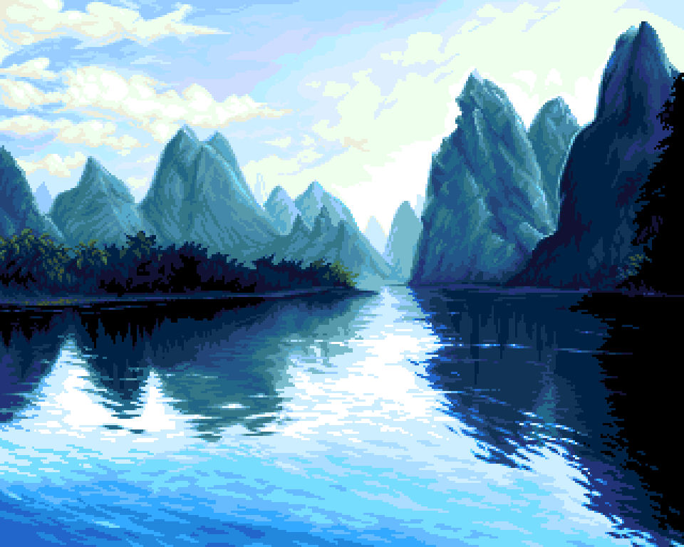

Lever Låda
Ingredienser
8 portioner
- 3 dl grötris
- 2 dl vatten
- 5 dl helmjölk
- 500 g nötlever
- 2 st ägg
- 2 st lök
- 75 g smör
- 2 dl sirap
- 3 tsk salt
- 1 tsk mejram
- 1 tsk vitpeppar
- 2 dl russin
Tillredning
- Koka riset i vatten och mjölk i ca 20 minuter.
- Tärna löken i små bitar och bryn i stekpannan.
- Skär levern i bitar och sätt i matberedaren med kniv i botten.
- Kör levern ca 2 min tills den är finfördelad.
- Koka russinen i vatten i ca 5 min, häll bort vattnet.
- Smält smör.
- Blanda alla ingredienserna med levern.
- Häll i en smord ungsform och grädda i ugnen i ca 90 min i 175 grader.
